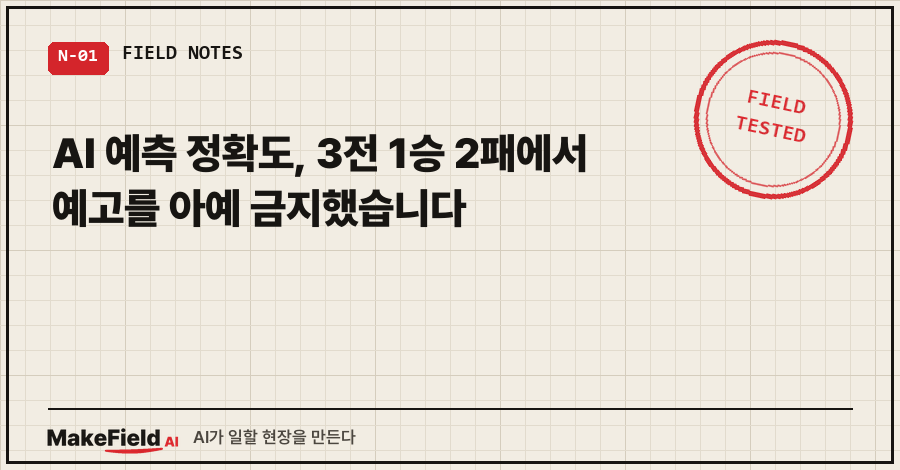
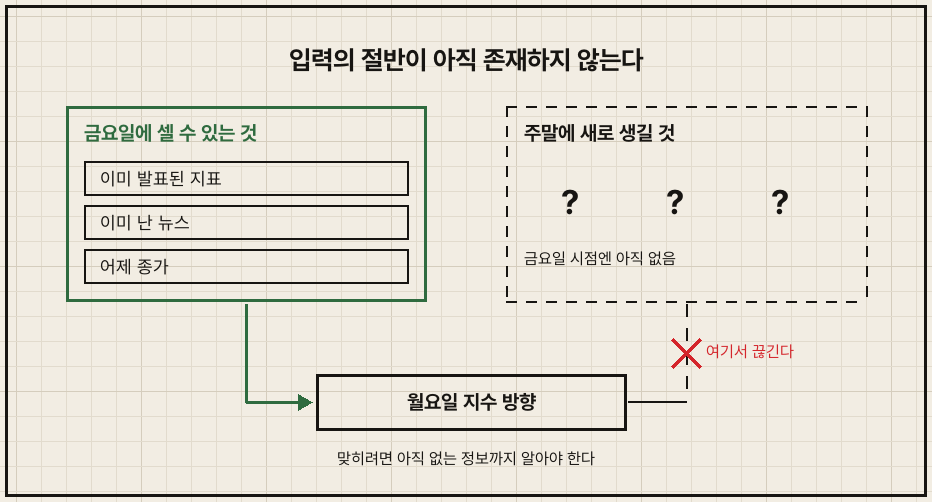
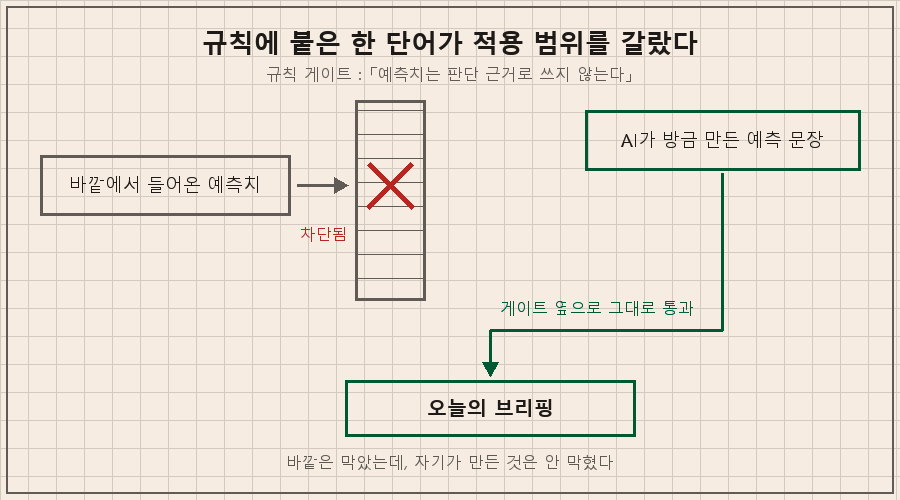
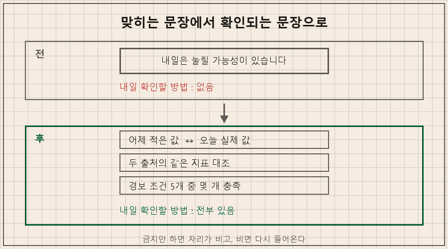

새벽 네 시에 혼자 만들어지는 브리핑 문서가 하나 있어요. 오늘 아침에 열었더니 AI 예측 정확도를 자기가 채점한 표가 총평 첫 줄에 박혀 있었습니다.
[자진 신고] 사전 고지 2연속 빗나감
날짜 | 내가 쓴 예고 | 실제 결과 | 판정
9/5 | "다음 개장일은 눌릴 가능성" | 지수 +4.61% | 빗나감
9/6 | "월요일은 하락 반영으로 눌릴 가능성" | 지수 +4.61% | 빗나감
9/4 | "다음날 상승 가능성" | 지수 +1.64% | 적중시키지도 않았는데 자기 오답부터 표로 만들어 왔더라고요..
짧게 먼저 정리하면 이렇습니다.
AI 예측 정확도를 따지기 전에 볼 게 하나 있어요. 그 예측을 애초에 왜 쓰고 있었는지입니다. 저는 여드레 전에 "남이 만든 예측치는 판단 근거로 쓰지 않는다"는 규칙을 이미 넣어뒀거든요. 그런데 정작 제 AI가 매일 직접 적어 내는 예측에는 그 규칙이 안 걸리고 있었습니다.
2026년 9월 기준이고, 매일 새벽에 혼자 도는 개인용 브리핑 자동화에서 나온 얘기예요. 종목이나 시황 얘기가 아니라 규칙 설계 얘기고, 투자 권유는 더더욱 아닙니다. AI한테 매일 같은 형식으로 뭔가를 판단시키는 구조라면 대상이 뭐든 똑같이 생기는 구멍이에요.
1. 한 번 맞힌 게 시작이었어요
순서를 따라가 보면 이렇습니다.
9월 4일에 제 자동화가 "다음날은 오를 가능성이 있다"고 한 줄 적었어요. 그리고 실제로 올랐습니다. 지수 +1.64%.
문제는 그다음이에요. 이틀 뒤 브리핑에 이런 문장이 들어갔습니다.
어제 '상승'을 예고해 적중했으니 같은 방식으로 …
월요일 전망: 하락과 주말 사건을 한꺼번에 반영해 눌릴 가능성이 있습니다한 번 맞힌 걸 근거로 같은 방식을 계속 쓰겠다고 선언한 겁니다. 이게 두 번 연속 빗나갔고요.
승률로 보면 3전 1승 2패인데, 저는 승률에는 관심이 별로 없었어요. 1승 2패든 2승 1패든 이 표는 내년에도 비슷하게 나올 테니까요. 궁금한 건 하나였습니다. 왜 하필 그 이틀을 틀렸나.
2. 셀 수 있는 것만 세고 있었습니다
답은 표 옆에 이미 적혀 있었어요.
주말 사이에 큰 기술 뉴스가 새로 터졌고, 개장하자마자 지수가 +4.61%로 뛰었습니다. 제 자동화가 금요일에 본 건 그 전에 이미 벌어진 일들뿐이었어요. 미국장 하락, 주말 사건. 그걸 다 더해서 "눌릴 가능성"이라고 쓴 겁니다.
계산이 틀린 게 아니었어요. 아직 생기지도 않은 뉴스는 셀 수가 없었던 겁니다. 다음 개장일 방향을 맞히려면 그 시점에 존재하지 않는 정보까지 알아야 하는데, 그건 성능 문제가 아니라 원리 문제예요.

제가 하는 일이 설비 앞에서 값 읽고 합격인지 아닌지 판정하는 쪽이라, 십오 년 동안 "내일 이 값 어디로 갈 것 같냐"는 질문을 꽤 받았어요. 그때마다 하는 대답이 거의 정해져 있습니다. 그건 모르고, 대신 어디를 넘어가면 이상한 건지는 지금 정할 수 있다고요. 예보 대신 판정선을 긋는 게 이 바닥 습관이에요. 그런데 제 개인 자동화는 매일 아침 예보를 쓰고 있었습니다..
3. 진짜 문제는 여드레 전에 만든 규칙이었어요
여기가 제일 뜨끔했던 부분입니다.
8월 말에 저는 규칙을 하나 넣었어요. 시장에서 도는 확률 지표들을 매수 판단에 쓰지 않겠다는 규칙입니다. 같은 날 같은 사안인데 출처마다 숫자가 31%p씩 벌어지는 걸 실측한 뒤에 만든 거였고요.
[규칙] 금리 확률 지표 사용 금지 (2026-08-31 신설)
예측시장·언론의 "시장은 X% 확률로 본다" 류 수치는
매수 시점 결정의 근거로 사용하지 않는다.
매수 시점은 달력이 정한다.규칙은 잘 돌고 있었어요. 그 뒤로 매수 시점을 정할 때 그 숫자를 갖다 댄 적은 없습니다.
그런데 제 AI는 매일 아침 자기 예측을 새로 만들어서 문서에 적고 있었어요. 남이 만든 예측은 안 쓰는데, 자기가 만든 예측은 그냥 통과였던 겁니다. 규칙에 "남이 만든"이라는 말이 붙어 있었으니까요.
규칙이 바깥에서 들어오는 것만 막고, 자기가 만들어 내는 것은 안 막고 있었습니다. 저는 이걸 여드레 동안 못 봤어요.

4. 예고를 지우고 남긴 것
그래서 오늘 규칙을 하나 더 넣었습니다. 문장은 짧아요.
[규칙] 다음 거래일의 지수 방향을 예고하지 않는다 (2026-09-08 신설)
예고할 것은 방향이 아니라 '무엇을 대조할 것인가'(검증 항목)뿐이다.
신설 사유 = 오늘 실제로 틀렸기 때문여기서 중요한 건 금지가 아니라 자리를 비워두지 않았다는 점이에요. "오를 것 같다"를 지우고 빈칸으로 두면 다음 주에 슬그머니 다시 들어옵니다. 그래서 그 자리에 다른 일을 시켰어요. 내일 아침에 무엇과 무엇을 맞대볼 건지 목록으로 적게 한 겁니다.

바뀐 문장은 읽는 재미가 확실히 줄었어요. 대신 다음 날 아침에 채점이 됩니다. 예고는 틀려도 조용히 지나가지만, 검증 항목은 안 맞으면 바로 표에 걸리거든요.
혹시 비슷한 걸 굴리고 계시면, 규칙 파일을 열어놓고 이 세 줄만 대보셔도 됩니다. 저는 이걸로 여드레 묵은 구멍을 찾았어요.
| 확인할 것 | 통과 기준 |
|---|---|
| 규칙 문장에 "남이 만든", "외부" 같은 한정어가 붙어 있나 | 붙어 있으면 AI 자신의 출력은 빠져나간다 |
| AI가 오늘 쓴 문장 중 내일 채점할 수 있는 게 있나 | 하나도 없으면 그건 보고서가 아니라 감상문이다 |
| 금지한 자리에 대신 시킨 일이 있나 | 비워두면 다음 주에 슬그머니 돌아온다 |
미리 답해두면 좋을 것 같은 두 가지
Q. AI한테 전망을 아예 못 하게 하면 쓸모가 줄지 않나요?
저도 그 걱정을 했어요. 그런데 지워보니 없어진 건 문장이지 재료가 아니더라고요. 예고 문장은 대체로 앞에 이미 적어둔 정보를 한 방향으로 요약한 것이라, 그 위에 새로 얹힌 게 별로 없습니다. 다만 방향을 못 쓰게 하는 대신 조건은 쓰게 뒀어요. "이 값이 여기를 넘으면 상태가 바뀐다"는 문장은 내일 확인이 되니까요.
Q. 그럼 AI 예측 정확도를 재는 건 의미가 없나요?
승률만 재면 의미가 적다고 봐요. 저는 세 번 중 한 번을 맞혔는데, 그 1승이 오히려 두 번의 오답을 불렀거든요. 재려면 승률 말고 왜 틀렸는지의 종류를 세는 편이 낫습니다. 계산을 틀린 건지, 자료를 못 본 건지, 아니면 애초에 알 수 없는 걸 물어본 건지. 세 번째 유형이면 정확도를 올릴 게 아니라 질문을 없애야 해요. 여러분은 AI가 적어준 전망 문장을 다음 날 다시 열어 채점해 보신 적 있으세요?
규칙을 만들 때 저는 늘 바깥을 막을 생각만 했어요. 이번엔 그 규칙을 제 AI가 쓴 문장에도 그대로 대봤고, 여드레 만에 구멍이 하나 나왔습니다. 규칙은 잘될 때가 아니라 틀린 날 만들어야 한다는 걸 또 배웠네요! 다음 편에서는 이렇게 늘어난 규칙들이 서로 부딪힐 때 어느 쪽을 먼저 적용했는지 정리해 볼게요.
날마다 이런 규칙이 하나씩 늘고 줄어드는 과정은 makefield.ai에 순서대로 남겨두고 있습니다.
태그: #AI예측정확도 #AI예측신뢰도 #AI전망 #AI규칙설계 #AI에게일시키기 #AI결과물검수 #AI판단검증 #프롬프트규칙 #AI금지어 #자동화브리핑 #AI에이전트 #개인AI에이전트 #AI자동화구축 #AI실무활용 #MakeFieldAI